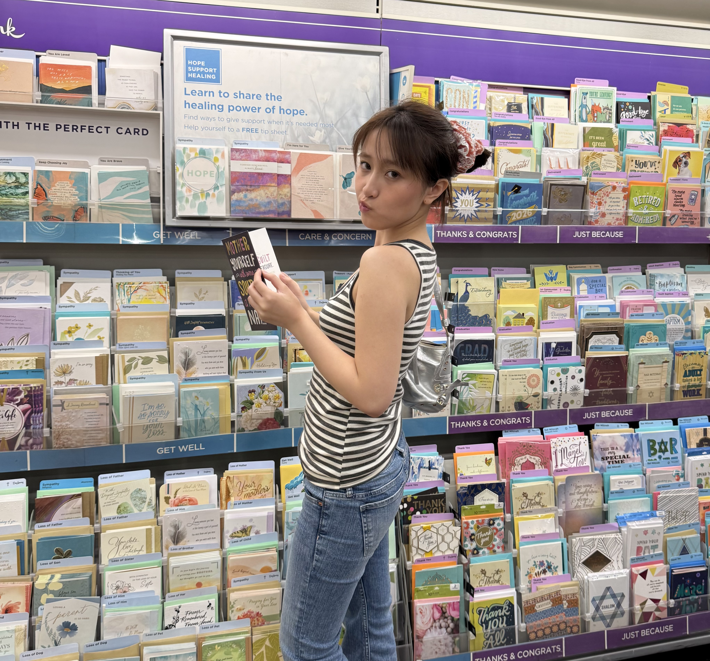
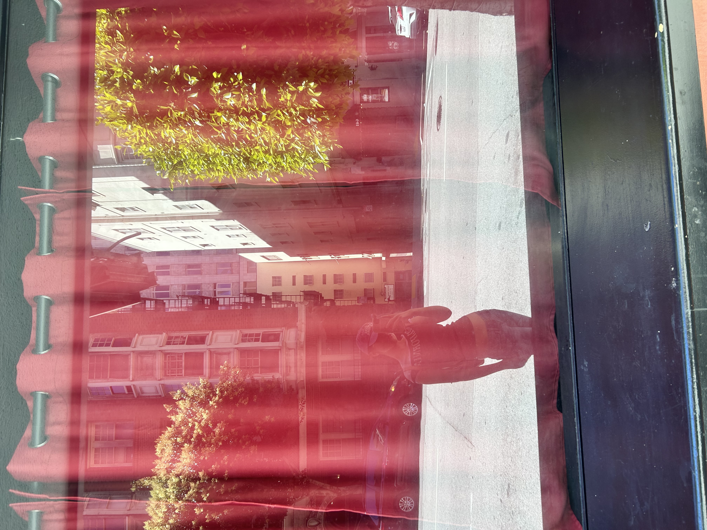
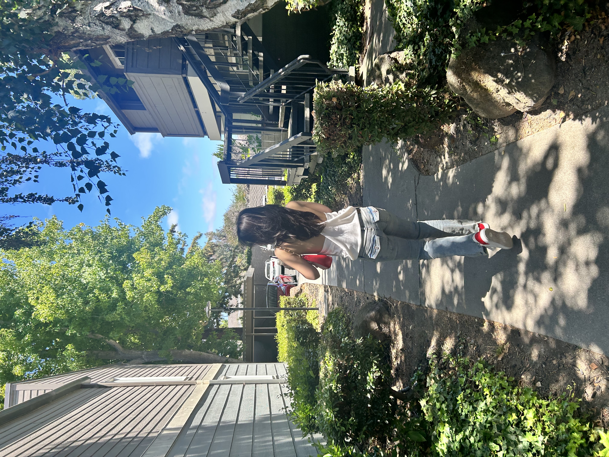

01Care + people
TraumaLink
A live handoff that lets emergency teams share the right information before the patient arrives.
- Next.js + WebSockets
- Medplum FHIR + Deepgram
- Voice and text input
contents
Vol. 01 — 2026
Software developer
I am Hannah, a developer who likes turning messy problems into calm, human tools. I work across web apps, desktop companions, and small experiments that make everyday life feel a bit more possible.
xoxo

Your photo images/portrait.jpg

Your photo images/photo-1.jpg

Your photo images/photo-2.jpg
two more, with the portrait above
a note to self
About
I care about the space between the technical and the human: the quiet details that make something easier to understand, more comfortable to use, or simply a little more delightful.
I studied computer science at the University of Michigan. These days I work in Python, TypeScript, React, Flask, and the databases and cloud tools that keep a product standing up.
GitHubWork
Azimuth and Tarmac are both current. Zyro and MiTek are the chapters just before them.
Azimuth Industrial Co.
Tarmac.IO
Zyro Company
MiTek Company
Education University of Michigan, Ann Arbor · Bachelor of Science in Computer Science
Toolkit Python · TypeScript · JavaScript · SQL · C++ · Ruby · React · Flask · Ruby on Rails · PostgreSQL · MongoDB · FileMaker · Microsoft 365 · Docker · AWS · GitHub Actions
Projects
A mix of practical tools, playful experiments, and projects still teaching me something.
A live handoff that lets emergency teams share the right information before the patient arrives.
A tiny Windows companion who walks across your screen and remembers to remind you to drink water.
A clear little dashboard for following large Ethereum transfers without losing the thread.
A starting point for a personal news and documents assistant that keeps the signal close.
A learning project: starting with one careful crawler, then making room for concurrency.
No projects in this corner yet. Try another filter.
Notes
The same interests, kept where a journal would keep them.
Resume
One page, print ready. The long version is the work above.
Contact
Roles, collaborations, or a project you cannot stop thinking about.